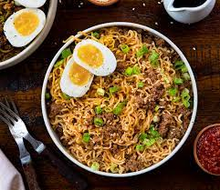

Simple Spicy Beef Ramen

Tip: partially freeze the steak before slicing thinly to get clean cuts.
- Prep Time: 10 mins
- Cook Time: 10 mins
- Servings: 2
- Total Time: 20 hrs
Here's what you need:
- 1 package of beef-flavored ramen noodles
- 1 cup thinly sliced shiitake mushrooms
- 1/2 cup frozen-shelled edamame
- 1 tablespoon reduced-sodium soy sauce
- 2 teaspoons Sriracha sauce, or to taste
- 4 ounce beef top sirloin, thinly sliced
- 1 tablespoon chopped fresh cilantro, or to taste
Directions
- Cook ramen in a saucepan according to package directions, adding mushrooms, edamame, soy sauce, and sriracha in the last 2 minutes of cooking. Add steak in the last minute of cooking. Top servings with cilantro and, if desired, additional Sriracha sauce.